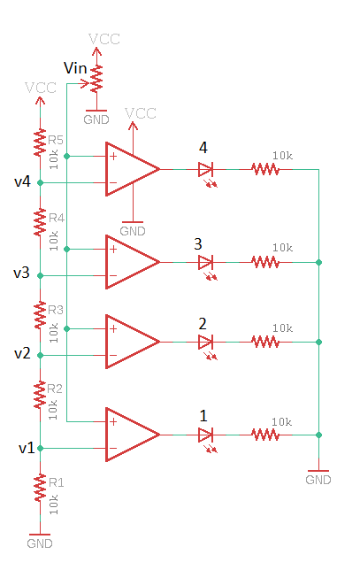
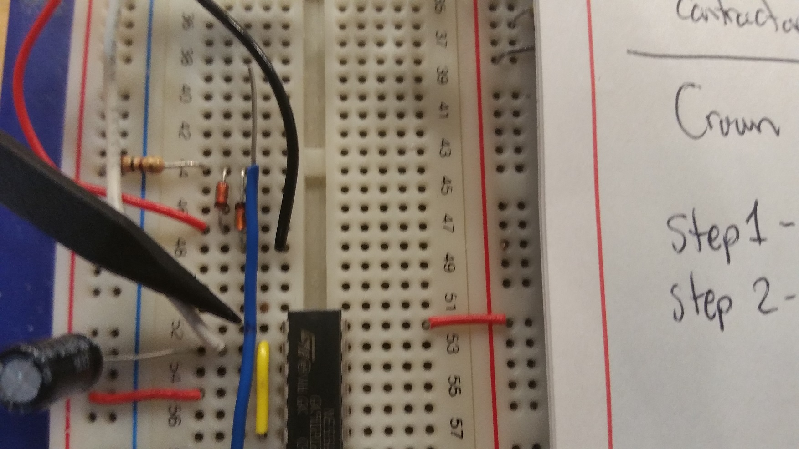
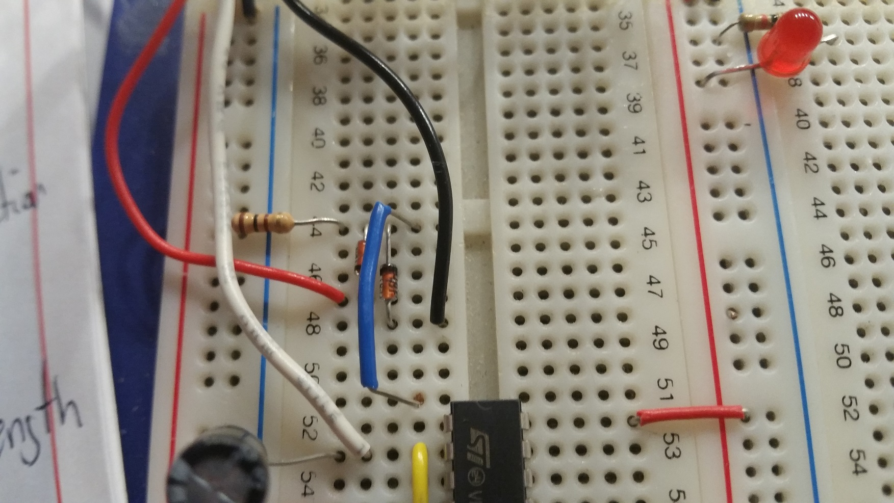
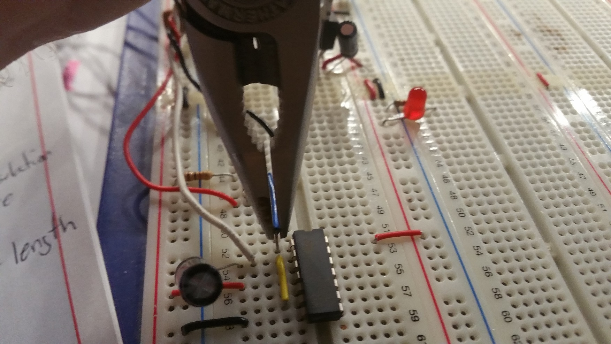
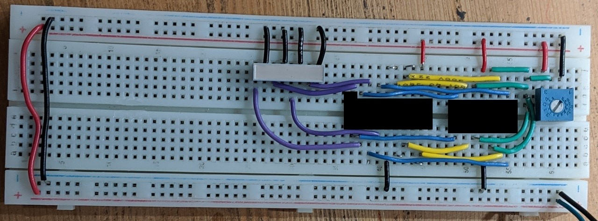

EENG 393
Lab 1 - Introduction| Lab: | 1 |
| Status | Live |
InLab 1
Some self-guided activities.Objectives
- Schematic - component symbols, names, values, junctions, net names
- Resistors - characteristics, tolerance, E-series
- Potentiometer - characteristics, rheostat, voltage divider
- Voltage divider - equations, test question
- LM324 OpAmp - pin-out, internal block diagram
- Comparator - behavior, questions
Lab 1 assignment
You may complete this assignment in teams of two. In this week's lab you will be prototyping the VU meter circuit shown in the image below. You will need to find the components for the lab using the lab supplies in Brown 304 and Brown 305 labs. These include:- (1) LM324 op-amp
- (4) LEDs
- (9) Resistors

Do not get hung-up on having the exact value for the resistors shown in the schematic. The current limiting resistors on the LEDs are intended to get the current flowing through the LEDs to between 1mA and 5mA. The resistors in the resistive ladder need to be identical values and high enough to prevent the resistors from dissipating too much power. Your breadboard will be evaluated based on its functioning correctly and being constructed using best practices codified using the rubric posted on Canvas.
Cutting short length's of wire is made difficult because it's difficult to hold the short piece of wire in your fingers while stripping the other end. The following are the steps that I use when making a short wire to span two holes in the breadboard. Note that the holes in a breadboard are 0.1" on center. I use this piece of information to as a guide when cutting wire.
| Operation | Picture |
| On a long piece of wire, strip about 0.4" of insulation off the wire. Don't be overly concerned with getting it perfect, but try to be withing 0.1" - a little too much is better than too little. You can measure the amount of insulation removed using the holes in the breadboard as a handy guide. | 
|
| In this picture, I need the wire to go from the hole adjacent to the resistors and diodes (row 44) to pin 1 of the IC shown. To determine the amount of insulation needed on the wire, I lay the end of the insulation on the stripped end of the wire over the hole that I need the wire to go in (row 44). I mark the insulation at the other end of the wire over the hole that I need to wire to go into (row 52). I am pointing to this hole in the image at right. I use a pen to mark the insulation, or sometimes bend the wire at this location. It is better to cut the wire a bit short in this step as the a wire with too much insulation is more difficult to fit into its assigned space. |  |
| I cut the wire at the location identified in the previous step. Now I need to slide the insulation down the wire. I find a pair of needle nose pliers makes this process go much more smoothly. I grab the bare wire with the pliers and with my other hand grasp the insulation and twist it around the wire to break it free. Once the insulation rotates, simultaneously twist the wire while pushing it towards the pliers. You should be able to move the insulation on wires up to about 2 inches. | 
|
| Spend a little time getting the insulation centered on the wire. | 
|
| Next bend the exposed wire leads in the same direction. I find using my pliers helps to make nice sharp bends in the wire. Place the wire on the breadboard and check the fit. In the image to the right, the wire is coming up short of the pin 1 hole for the IC shown, so I will need to increase its length. |  |
| To make the wire longer, just straighten out the wire and bend it further away from the insulation as shown in this image. Even though the wire looks a little long in the picture, this is close enough. | 
|
| Inserting wires with your fingers often results in smushing the wire into an accordion shape without having it be inserted into the breadboard hole. Enter my trusty needle nose pliers - grab the wire down low with only a small amount protruding from the pliers ends and push into the breadboard hole while slightly twisting/rotating the pliers. Firm but gentle will get the job done 9 times out of 10. Sometimes you may have to admit defeat and choose an adjacent breadboard hole. |  |
| All done and looking good. | 
|

Show-up to next week's lab session prepared to demonstrate your circuit.